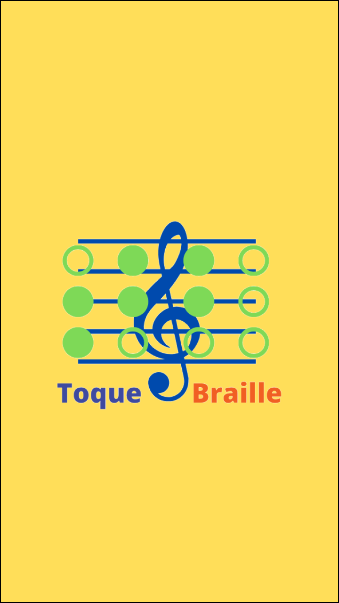
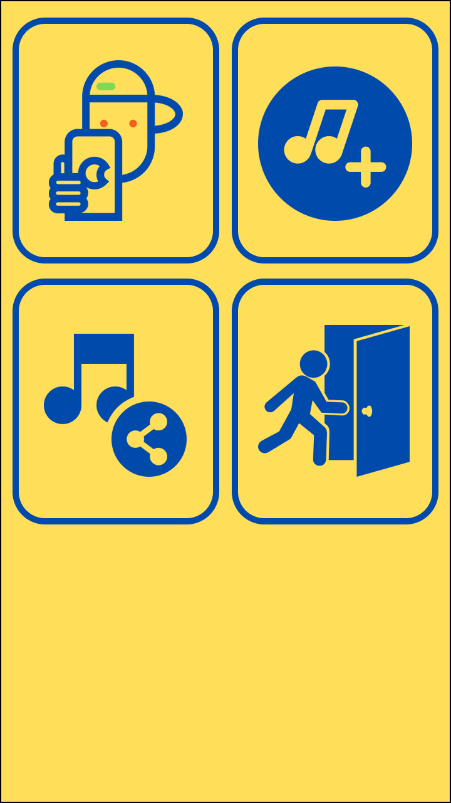

Toquebraille |
|
|
Você que conhece ou tem um amigo que tem alguma acessibilidade mais que gosta de tocar musicas compartilhe, esse aplicativo irá ajuda-lo a construir e ouvir suas partituras. O projeto Toque Braille foi desenvolvido pelo estudante de mestrado Romulo Castro, com o objetivo de facilitar o uso de pastituras para pessoas com tem alguma deficiencia visual e querem aprender, tocar, criar, partituras musicais. Umas das vantagens do aplicações é a facilidades com as funções da aplicação de forma que o usuário tenha uma facilidade de implementar suas partituras. |
 |
|  |
O Toque Braille é o novo aplicativo que irá te ajudar a resolver as difculdade que as pessoas cegas tem para ler e criar partituras de uma forma rapida e com muita facilidade. Com botões legiveis e de facil entendimento Botão Ler Partituras: Facilita o usuário a entrar nos arquivos armazenados. Com o Botão de editar: O usuário pode criar suas partituras de modo facil e rapido. Botão de sair: sai da aplicação |
O que é o projeto Toquebraille |
|
|
O Aplicativo Toque Braille foi desenvolvido pelo estudante de mestrado Romulo Castro, com o objetivo de facilitar o uso de pastituras para pessoas com tem alguma deficiencia visual e querem aprender, tocar, criar, partituras musicais. A técnica de Musicografia Braille é uma das principais ferramentas que permitem essa equivalência. Essa técnica foi desenvolvida por Louis Braille em 1828, que adaptou a técnica para transcrição de textos anteriormente desenvolvida para a transcrição musical. Através desta técnica um texto musical de qualquer complexidade pode ser transcrito para a forma tátil e facilmente assimilado pelos deficientes visuais. Existem no mercado poucos programas disponíveis no mercado para transcrição musical. E quando se fala de aplicativo tem menos ainda e isso os torna ainda mais essencial para as pessas que gostariam de produzir seus proprias pastituras. Esses programas permitem de forma bastante limitada que uma pessoa cega (ou não) introduza o texto musical através de um teclado alfanumérico ou de uma interface digital para um instrumento musical (MIDI). O aplicativo usa de algumas tecnicas de inteligência Artificial, para que o usuário tenha a capacidade de criar suas partituras de forma simples. Para contexto brasileiro, entretanto, estes programas estão fora da realidade, pois além de caros são incompletos. Mais importante: não existe conhecimento disseminado nem para sua utilização direta nem para o ensino qualificado. Os professores de música não têm conhecimento da musicografia Braille, acabam por recusar-se a lecionar para estudantes cegos por julgarem impossível passar para eles o conteúdo das partituras com efetividade. Desta forma, torna-se muito difícil a inclusão de músicos cegos nas escolas de música regular. |